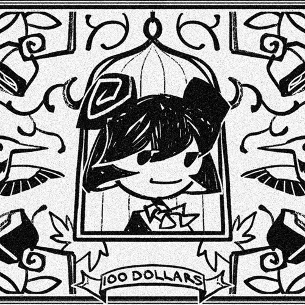

Fictophile
| Published On | June 5, 2024 |
|---|---|
| Cover of | First to Ten - Mom Jeans |
An animation introducing Aveline and Art for the first time publicly in video format. The song is performed by Aveline, where she recalls her experiences in stardom. To cope with the burnout from excessive work, she resorts to drugs.
Aveline is deeply in love with Art, who seems to be indifferent to her.
Lyrics
She said it's not my fault
That it all fell down
So close your windows, lock your doors
I can't help feeling I'm forgetting something
You used to paint me pictures now
You only paint my wall
I'm worried that I've started something
Built on lies and alcohol
I want to sit down on the floor
Become a worn out metaphor
But still there's something, probably nothing
That brings a phaser to my door
No use to count the times that I've woken up past ten
I tell myself what's done is done
But I know I'll drink next week again
I suggest we let things rest
Till I come down or until you drown
Cause you're all I've got left in this town
And I need time and you need wine
So grab a jacket, grab your phone
I've heard it's pretty cold outside
I suggest we let things rest
Till I come down or until you drown
Cause you're all I've got left in this town
And I need time and you need wine
So grab a jacket, grab your phone
I've heard it's pretty cold outside